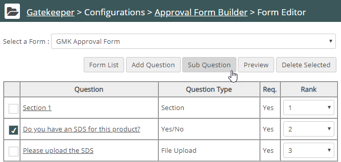
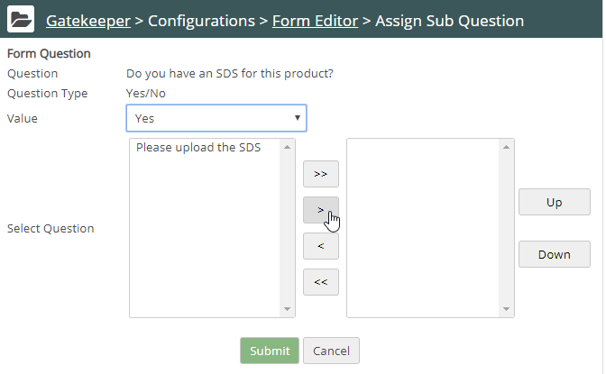
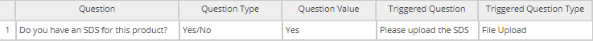
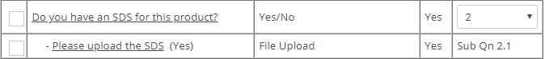

You can add a sub-question in a request form that is triggered by the answer to another question.
In the following example, the form contains a yes/no question asking the requestor if they have an SDS for the product. If the answer is "yes" a file upload question should be displayed for the requestor to upload the SDS.
To add a sub-question to a form:
First, create both the question and sub-question as ordinary questions on the form.
In the Form Editor, check the name of the question that triggers the sub-question and click Sub Question.

The Assign Sub Question panel displays:

Choose the Value that triggers the sub-question. In this example, the value that will trigger the sub-question is "Yes".
Click Submit. The sub-question assignment is shown at the bottom. You may add additional sub-questions if needed.

The Form Editor displays the new sub-question, indented from the triggering question and includes the value that triggers the sub-question.
In our example, we moved the file upload question. When the requestor answers Yes to “Do you have an SDS for this product?”, Gatekeeper displays “Please upload the SDS” and provides a file browsing tool.

Note: You must activate the request form in order to make the form available to an approval definition. To activate the form, click the form name in the list of request forms and choose the Active: Yes option.